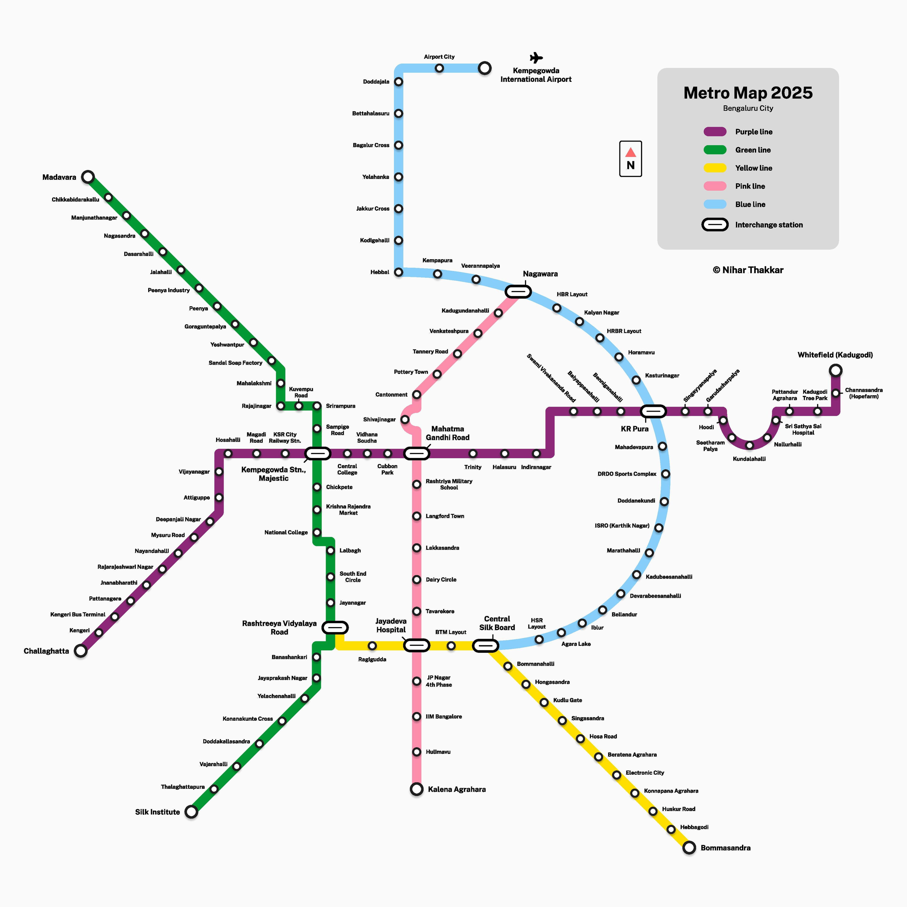

AI-Enabled Metro Ticketing
Plan smarter trips across Bengaluru in seconds.
Enter any Bengaluru location and MetroAI will detect the nearest metro stations, show last mile options with BMTC routes and fares, and generate smart ticket insights.
Live Metro Snapshot
Active Lines
5
Stations Indexed
83
Last Mile Modes
BMTC, Walk, Cab, Auto
AI Trip Planner
Locate the nearest metro stations for both start and destination in Bengaluru. We calculate station distance, fare estimates, and last mile connectivity in real time.
Nearest Stations
Start Station
Awaiting input
Destination Metro (Nearest)
Awaiting input
Metro Distance
-
Metro Fare Estimate
-
Start Access Distance
-
Destination Access Distance
-
Route Summary
Last Mile Connectivity
Metro Map 2025
Visual reference map for the operational Blue and Pink lines with interchange highlights.

AI Features Built In
MetroAI blends location intelligence with explainable AI to make ticketing faster, fairer, and more sustainable.
Smart Route Insights
Predicts the quickest line, highlights interchange points, and estimates in-station wait time using peak-hour models.
Dynamic Fare Advisor
Recommends the best ticket type based on trip length, crowd level, and travel frequency.
Last Mile Optimizer
Surfaces BMTC bus routes, walking distance, and cab availability with cost and time estimates.
Green Impact Score
Shows carbon savings against private vehicles and nudges toward shared mobility.
Live AI Insight
Smart Ticketing
Complete your booking with AI-optimized fares, live QR preview, and secure payment placeholders.
MetroAI Ticket
Single Journey
Estimated Fare
-
QR Token
METRO-AI-READY
Metro QR Code
Metro Account
Login is stored locally for this demo device.
Metro Wallet
Balance
Rs 0
Total Rewards Earned
Rs 0
Add balance when you are online. Wallet balance is stored locally for offline trips and syncs when you reconnect.
Lines At A Glance
Purple, Green, Yellow, Blue, and Pink Lines are operational today.
Purple Line
East-West corridor
Green Line
North-South corridor
Yellow Line
South to Central corridor
Blue Line
North-East to Airport corridor
Pink Line
North-West to South corridor
Interchange Stations
Switch lines quickly at these key hubs.